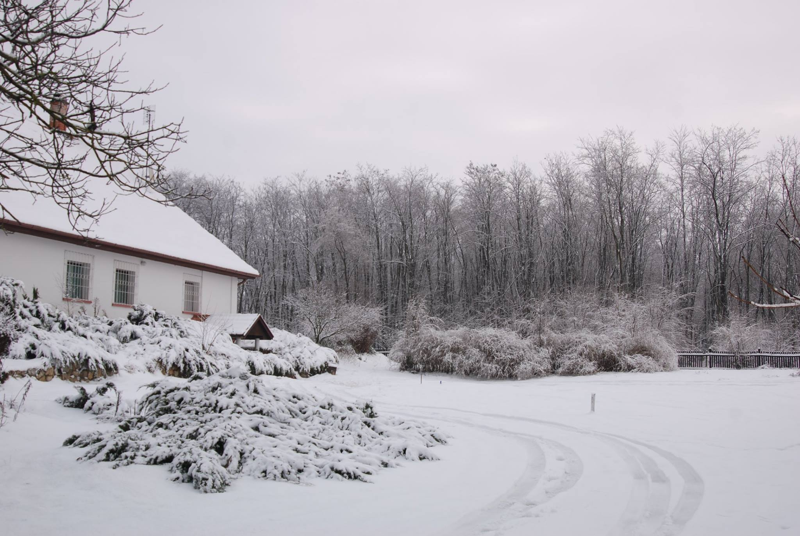

Élménypedagógia.com

A 150 éves épület inkább egy kúriára hasonlít, mint egy düledező tanyára. A KuK Monarchia tisztjeinek volt borospincéje és pihenő épülete egy majdnem egy hektáros parkban tálalható. Vastag tégla-vályog falai télen hűvösek, nyáron melegek. Minden helyiség száraz, a kiváló kinti-benti klíma allergiás betegek gyógyulását segíti.
A parkban 22 diófa ad árnyékot, így meg a 40 fokos magyar nyárban is hűsítő szellő lengedezik. Nyáron a tornác hűsében lehet étkezni, a madárparadicsom éneklését hallgatva. További hűsölést és felüdülést nyújt a parkban tálalható medence kicsiknek és nagyoknak egyaránt. Egy óriás trambulin, kerti játékok, homokozó, játszótér várják a családos vendégeket.

A ház közvetlen környezete számtalan kikapcsolódási lehetőséget nyújt. Egyetlen autók által járt út átkelése nélkül lehet több száz hektár területen lovagolni, túrázni, kerékpározni. A gyerekek veszélyek nélkül olyan szabadon fedezhetik fel a természetet, melyet nagyapáink-nagyanyáink élvezhettek utoljára. Számtalan védett és ritka madár- és hüllőfaj, őzek, nyulak, rókák, fácánok, búbos bankák, baglyok megfigyelésére nyílik alkalom.
A nagy épületben három hálószoba, két fürdőszoba, egy óriási nappali, étkező és konyha tálalható. Összesen 8 felnőtt számára van állandóan felállítva ágy, mert nem szeretjük a zsúfoltságot – de akar 10 fő is kényelmesen elfér.
Mivel mi is nagycsalád vagyunk, minden megtálalható, ami kisebb-nagyobb gyermekekkel érkező családoknak szükséges: Babaágy, etetőszék, pelenkázó, babakád. Minden korosztályt varjak a játékaink, könyveink, társasjátékaink.


Az épület együttes további sátrak, tábori ágyak elhelyezésével min. 20 fős táborozó csoportokat, osztályokat képes kényelmesen befogadni.
A Care Farmok hálózata Európában egy olyan pedagógiai/terápiás/megelőző irányzat, melyben a természet oktató és gyógyító erejét használják fel a mindennapi tapasztalatok útján. A Green Care – Zöld Gondoskodás – gondolata szerint az állatokkal felépített kapcsolatok, a gondoskodás olyan alapvető szociális készségeket éleszt fel ill. tanít meg, melyeket a mai modern világban elfelejtettünk.
Az állatok, növények ellátása, táplálása testileg vagy lelkileg sérült gyerekekre és felnőttekre is egyaránt gyógyító hátassal van. Az Egyesült Királyságból indult mozgalom farmjain mentális problémákkal és tanulási nehézségekkel küzdő, valamint testi fogyatékossággal élő felnőtteket és gyerekeket fogadnak hosszabb-rövidebb időre. A viselkedési korrekció vagy terápia lehet rövid tavú, ambuláns, vagy hosszabb tavú, bentlakásos is. Szociális viselkedésükben zavart, autista, depressziós, vagy függő személyeket vonnak be a Care Farmok a gazdálkodás mindennapi életébe. A tanulás és terápia egyrészt önmagából a Farmokon ellátott feladatok során szerzett tapasztalatokból ered, másrészt a Farm személyzetének szakmai útmutatásából valamint a közös reflexiókból.
A Green Care – Zöld Gondoskodás alapvető kommunikációs szabályokra, felelősségre, önmaguk reflektálására és megismerésére tanítja meg a résztvevőket. Az állat közvetlenül reagál cselekvésünkre, lelkiállapotunkra. Rossz vagy jó hangulatunkat azonnal megérzi, éppúgy erősségeinket és gyengeségeinket is. Csak akkor tudunk állatokkal sikeresen bánni, ha az empátia és a határozottság bizonyos kedvező elegyét megtálaljuk – sem a túlzott babusgatás, sem a durvaság nem vezet sikerre.
Az állatokkal való interakciók során a beszéd előtti, legősibb kommunikációs csatornákat kell használnunk, mivel a verbális kommunikációt csak igen szűk mértékben értik az állatok. A nonverbális kommunikáció szerepe a humán kommunikációban is nagyon fontos, csak ennek nem vagyunk tudatában. A kommunikáció 70-80%-a a nonverbális jelekből tevődik össze, a szó fontossága a maradék 20-30 %-ra korlátozódik. Testbeszéd, hangszín, mimika, tekintet, és ezek kombinációinak végtelen sokaságát használjuk – főleg tudattalanul – a mindennapi életünkben. Az állatok főként ezt a kommunikációs csatornát használjak, velünk emberekkel szemben is. Vagyis, ha sikeresen akarunk az állatokkal bánni, a legbanálisabb helyzetben is kénytelenek vagyunk saját nonverbális kommunikációnkra reflektálni ill. azt tudatosan alkalmazni. Nemcsak az összetettebb helyzetekben, mondjuk egy állat betanítása során van szükségünk a sikeres nonverbális kommunikációra, hanem az egyszerű mindennapi helyzetekben, az állatok ellátása során is. Ha mondjuk egy ló vagy egy sertés istállóját akarjuk kitakarítani, valahogyan el kell érnünk, hogy beengedjen, félreálljon és ne taposson minket össze.
A különböző állatfajok – kutya, macska, ló, baromfi stb. – különböző módon reagálnak érzéseinkre, személyiségünk gyenge és erős pontjaira, nonverbális kommunikációnkra. Viselkedésünknek tükröt tartva az állatok segítenek megismerni önmagunkat, reflektálnak kommunikációs stratégiánkra. Mindezt nem közvetve és késleltetve, mint gyakran az emberi kapcsolatok során, hanem azonnal és közvetlenül. Ha hibázunk, rosszkedvűek vagyunk, durván viselkedünk, vagy pont fordítva, nem vagyunk kellően határozottak, akkor nem tudjuk elérni azt, amit szeretnénk. Az állatok nem udvariaskodnak, nem kertelnek – sikerünk vagy kudarcunk azonnal látható.
A természetben eltöltött idő, az állatok ellátása mindig is a gyógyítás eszköze volt. A középkori börtönök, kórházak, kolostorok szerves része volt a konyha-, gyógynövény és virágos kert, az állatok. A szükséges élelem megtermelése mellett azonban már akkor is kikapcsolódást, megnyugvást jelentett a szabadban végzett munka.
Az 1350-és évekből származnak az első feljegyzések, melyek a Green Care irányzat előfutárainak tekinthetőek. Egy flamand kisvárosban, Geelben St. Dyhma a pszichés betegek zarándokhelye volt. Amikor már annyi zarándok érkezett a városkába, hogy az e célra épült kolostor hálótermei nem tudták őket elszállásolni, a helyi farmerek megnyitottak a zarándokok előtt gazdálkodásuk kapuit. Mar a középkorban több ezer embert képes volt befogadni ez az Antwerpen melletti kisváros.
A XIX. században, a modern pszichiátria megalapításánál Geel példaként szolgált a családi, szociális pszichiátriai irányzat számára. A XX. század elején a 16 ezer lakost számláló kisváros több mint 4000 „bentlakásos vendéget” látott el – ugyanis a „beteg” szót már a középkor óta kerülték. Hihetetlen módon több mint 700 éve töretlenül maradt fenn a hagyomány, Geelben a helyi farmerek meg ma is fogadnak pszichés problémákkal küzdő embereket.
A mai értelemben vett Care Farmok az I. világháború után jelentek meg. A háború sújtotta Európában sorra alakultak a terápiás közösségek, ahol természet közeliséget, harmóniát és társakat tudtak nyújtani az odaérkezett embereknek.
1939-ben jött létre a Camphill Mozgalom a skóciai Aberdeenben, dr. Karl König gyermekorvos, gyógypedagógus vezetésével. König a mozgalmat Rudolf Steiner antropozófiájára alapozta. Mozgalmuk lényege az volt, hogy fogyatékos gyerekek egészséges emberekkel családtagként éljenek együtt, munkájukkal részt vállalva a közösség fenntartásában. A sérült gyerekek közösségi ellátását önkéntes orvosok, pszichológusok, terapeuták, gyógypedagógusok segítették. Mára a Camphill Mozgalom nemzetközi hálózattá vált, világszerte közel 100 közösség található 20 országban.
Az 1980-as évek új lendületet kapott a Care Farm mozgalom, és azóta is dinamikusan fejlődik. Az Egyesült Királyságban és Skandináviában is növekszik a Care Farmok száma. Létrejöttüknek két formája is megtálalható: Vagy egy mar létező szociális intézmény kezd bele a gazdálkodásba, állattartásba terápiás céllal, vagy egy gazdaság nyitja meg kapuit fiatalkorú vagy felnőtt kliensek előtt. A természet spontán gyógyító hatását terapeuták, pszichológusok, orvosok segítségével mélyítik el. Tehát nemcsak a természet „beszél“ önmagáért, nincs a kliensekre bízva, hogy megértik-e az üzenetet vagy nem, hanem reflexió és útmutatások során igyekszenek a szakemberek tartós változást elérni a kliensek viselkedésében.
A Care Farmok célcsoportja nagyon sokrétű. Szerepel köztük tanulási zavarokkal, mentális nehézséggel küzdők, autisták, motiválatlan fiatalok, akik nem tudnak a hagyományos iskolai körülmények között teljesíteni. Sikerrel használják demens betegeknél, illetve egyre gyakrabban alkalmazzák a természettől elszakadt, városi, kiégett embereknél. Még alkohol és drogfüggő fiatalokat és felnőtteket is fogadnak.
Személyre szabott terápia zajlik a Care Farmokon, melynek fő célja az „empowerment”, a saját képességek és erősségek felfedezése. A személyiség megerősítése a következő lépeseken keresztül valósul meg:
A Care Farmok és a hozzájuk hasonló, a természet és a gazdálkodás erejével gyógyító módszerek számos kritikának is ki vannak téve. Orvosok, a hagyományos iskolát képviselő pszichológusok nem tartják eléggé tudományosan meglapozottnak és bizonyítottnak. Ezért 2017-ben Svédországban Walter Osika és Cecilia Stenfors, a stockholmi Karolina Institute kutatói, elvégeztek egy híressé vált 72 órás kísérletet. Céljuk a svéd természet, állatvilág gyógyító erejének népszerűsítése, a hagyományos svéd természetszeretetet terjesztése volt.
Svédország nyugati partjainál, a Henriksholm szigeten, 5 ember a természetben töltött 72 órát egy „üvegkalitkában”, egy üvegből készült házban. Mindannyian a világ legstresszesebb foglalkozásainak a képviselői voltak. Volt közöttük francia taxisofőr, német rendőr, brit műsorvezető. A hagyományos svéd szabadidős tevékenységeket kellett űzniük 3 napon keresztül: úsztak, horgásztak, grilleztek.
Minőségi és mennyiségi méréseket kombináltak, hogy összehasonlítható képet kapjanak a kliensek jóllétéről. A méréseket érkezéskor és a 72 óra elteltével végezték el. Vérnyomást, pulzust ellenőriztek, önértékelési tesztet töltettek ki, amelyben a jóllétet és a kliens természettel való kapcsolatát mérték. Használtak kreativitást és problémamegoldó képességüket mérő tesztet is. Minden este naplót írtak a kísérlet résztvevői.
A kutatók 72 óra után szignifikáns javulást tapasztaltak a vérnyomás és a pulzusszám esetében. A jóllét érzése egy 1-4 skálán 3,2-ről 3,8-ra, a természettel való kapcsolat az 1-7-és skálán 2,6-ról 5,6-ra nőtt. A klasszikus asszociációs kreativitás teszt alapján nőtt a kreativitás, a páciensek stressz szintje csökkent.
A kutatásvezető Walter Osika így kommentálta az eredményeket: “Nagyon meglepődtem az eredményeken. Az eredmények is azt mutatják, hogy a svéd »ki a természetbe« életmód nagyon rövid idő alatt javíthatja az emberek jóllét érzését. 70%-os csökkenést tapasztaltunk a résztvevők stressz-szintjében, és ez igen figyelemre méltó eredmény.” A kutatásról angol nyelven bővebben itt olvashat.
A Búbos Banka Tanya a Care Farmok szellemiségében nyitva tartja kapuit minden vendég előtt, legyenek azok „egészséges” vagy „sérült” emberek, felnőttek, fiatalok vagy gyerekek. Vendégeink, munkatársaink közt mindenfajta származású, etnikai hovatartozású és egészségi hátterű személy megtálalható. Rendszeresen fogadunk nemzetközi önkénteseket, akik a világ minden tájáról érkezve szeretnének megismerkedni a magyar kultúrával, a gazdálkodással, a természettel. Számos ország képviseltette már magát vendégeink közt: Anglia, Lengyelország, Németország, Franciaország, Japán, Malajzia, Kína, Portugália, Spanyolország. 2016 karácsonyát egy maláj és egy francia fiú, valamint egy angol lány ünnepelte nálunk a Búbos Banka Tanyán.
Izlandi terápiás lovaink mellett számos kisállat várja, hogy kisebb-nagyobb vendégeinkkel köthessen barátságot.